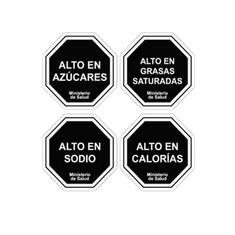

En el año 2012 fue aprobada la Ley de sellos (N° 20606), que reguló el contenido nutricional de distintos alimentos en Chile. Específicamente los cereales, modificaron sus fórmulas, reduciendo principalmente la cantidad de azúcares por porción.

El principal objetivo de la ley es fomentar los habitos saludables mediante un etiquedato claro y sencillo:
